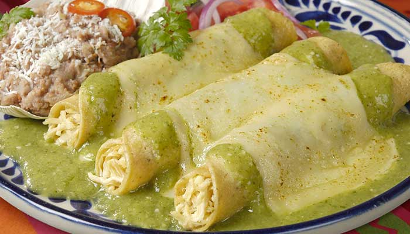
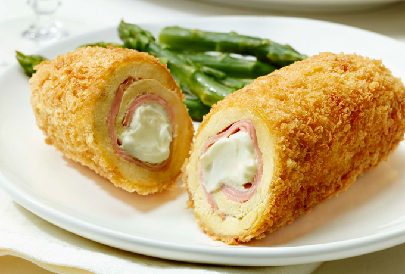
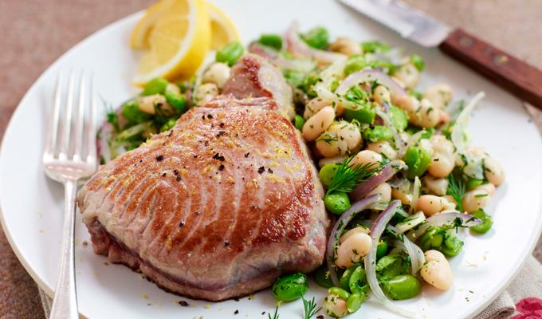
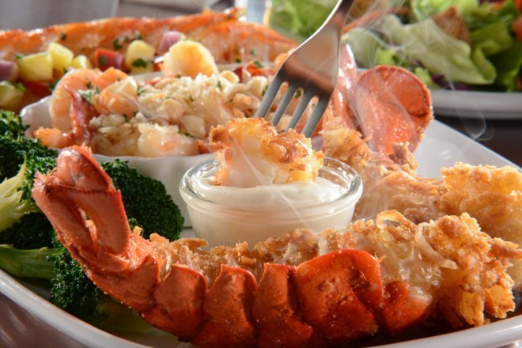

Blog gastronómico GogahT
La perfección solo llega a través de la práctica
Favoritos:






Enchiladas Suizas
12 / enero / 2019
Platillo elaborado con tortillas de maíz rellenas con pollo, bañadas con salsa verde y gratinadas con queso manchego. La salsa verde se prepara con algo de ajonjolí y crema; tradicionalmente se sirven tres con abundante salsa en un plato metálico o cualquier plato hondo para gratinar.
Fettuccine
25 / octubre / 2019
Esta receta fue crada por el chef Romano de quien recibe el nombre, y se compone de sólo de pasta, queso parmesano y la mantequilla.